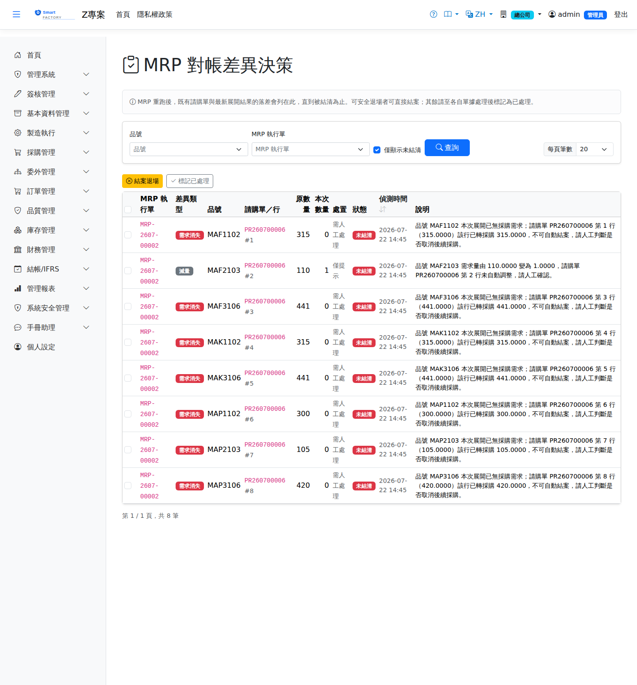

MRP 對帳差異決策MRP Variance Decisions
MRP 重跑會刪除並重建未投產的工單，但Re-running MRP deletes and rebuilds work orders that have not been released, but 已送審或已核准的請購單不會被自動覆寫Purchase requisitions already submitted or approved are not overwritten automatically——簽核過的單據由簽核治理接管，MRP 收不回來。兩邊因此可能脫鉤，最典型的情況是某個品號由「採購」改為「自製」後重跑：需求已移轉到工單，但原本的請購單仍留在原地。 — approved documents are governed by the approval flow and MRP cannot take them back. The two sides can therefore drift apart; the classic case is an item switched from "buy" to "make" and then re-run: the demand has moved to a work order, but the original purchase requisition is still sitting there.
本清單把這類落差變成This list turns such gaps into 必須被結清的待辦outstanding items that have to be cleared，持續呈現直到處理完畢，而不是只在重跑當下閃一則訊息。, which stay on the list until they have been dealt with instead of flashing up a single message at the moment of the re-run.

差異類型Kind
| 類型Type | 意義Meaning |
|---|---|
| 改自製／委外Switched to make/outsource | 本次已無此採購需求，且同一次展開有該品號的工單——需求只是換了供給通道。說明欄會指出接手的工單號。The purchase is no longer needed and the same run produced a work order for the item — the demand has simply moved to another supply route. The notes column shows the work order that has taken it over. |
| 需求消失Demand removed | 本次已無此採購需求，也沒有對應工單（例如訂單縮量）。The purchase is no longer needed and there is no matching work order either (the order was cut back, for example). |
| 增量／減量Increase / decrease | 品號仍需採購但數量改變。已核准的請購單不會被自動改量。The item still has to be purchased but the quantity has changed. Approved purchase requisitions are not re-quantified automatically. |
| 新增Add | 本次新增的採購需求，既有請購單已進入後續流程無法自動加入，須另行請購。A newly added purchase requirement; the existing requisition has already moved on and cannot take it, so a separate requisition is needed. |
處置方式Disposition
自動結案（系統參數）Automatic closing (system parameter)
系統參數System Parameters mfg_mrp_auto_close_obsolete_pr 設為Set to true 時，重跑當下就會自動把「未轉採購且本次已無需求」的明細結案，不需再到本清單處理；此類項目會以「已自動結案」狀態留存供追溯。預設為關閉（僅提示、由人工確認）。is on, the re-run automatically closes lines that were never converted to a purchase and are no longer needed, so they do not have to be handled from this list; such items are kept with the status "closed automatically" for traceability. It is off by default (the system only prompts and someone confirms).
欄位說明Field reference
查詢條件Query criteria
| 條件Condition | 說明Guide |
|---|---|
| 品號Item | 只看單一料件的差異Differences for one item only |
| MRP 執行單MRP Run | 只看某次 MRP 展開造成的差異Differences caused by one particular MRP run |
| 僅顯示未結清Open only | 只列出尚待處置的差異（預設勾選）；取消勾選可回看已結清紀錄Lists only differences still to be dealt with (ticked by default); untick it to look back at records already settled |
清單欄位List columns
| 欄位Field | 說明Guide |
|---|---|
| MRP 執行單MRP Run | 偵測出此差異的 MRP 展開批次The MRP run that detected this difference |
| 差異類型Kind | 落差的性質（如產銷模式由採購改自製、需求量變動、需求消失等）Nature of the gap (the item switched from buy to make, the demand quantity changed, the demand disappeared …) |
| 品號Item | 受影響的料件Item affected |
| 請購單／行PR / Line | 與最新展開結果脫鉤的既有請購單與行號；已送審或已核准者 MRP 不會自動覆寫The existing requisition and line that no longer match the latest run; MRP does not overwrite one that has been submitted or approved |
| 原數量Previous Qty | 請購單上目前的數量Quantity currently on the purchase requisition |
| 本次數量Current Qty | 最新一次 MRP 展開算出的應有數量；與原數量的落差即待處置金額Quantity the latest MRP run says there should be; the gap against the original quantity is what has to be dealt with |
| 處置Disposition | 人工決策結果：可安全退場者直接結案，其餘至各自單據處理後標記為已處理Manual decision: items that can safely be dropped are closed directly, the rest are marked as handled once they have been dealt with on their own documents |
| 狀態Status | 未結清／已結清；未結清者會持續呈現直到被處理，不會只在重跑當下閃一次Outstanding / settled; outstanding items keep showing until they are dealt with, rather than flashing up only at the moment of the re-run |
| 偵測時間Detected At | 此差異被偵測出來的時間戳Timestamp when the difference was detected |
| 說明Guide | 差異的具體描述與建議處理方向Description of the difference and the suggested way to handle it |
相關畫面Related screens
MRP 執行MRP Run、請購單Purchase requisition、工單查詢Work Orders